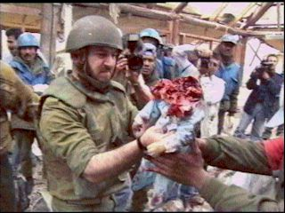
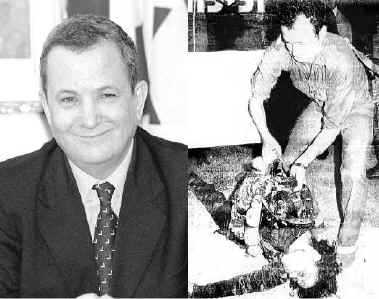
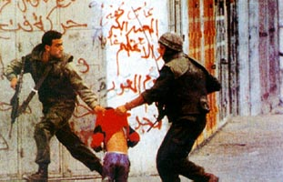
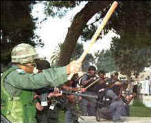
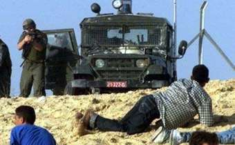
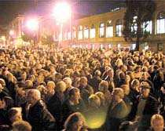

VOLasia limited who are
famous for their browsers has been targeted for hosting the atrocities of
ISRAEL!
You have been hacked by
m0r0n and nightman of WFD (World's Fantabulous Defacers)!
y
See the true face of Israel...
(Note: The
Israeli Defense Forces will once again tell you this is 'Palestinian
Propaganda' but surely this is the truth --- the truth they
don't want YOU! to know. )
9/10/Pop Quiz for Everyone:
Which country alone
in the Middle East has nuclear weapons?
Answer: Israel
Which country in the
Middle East refuses to sign the nuclear non-profileration treaty and
bars international inspections?
Answer: Israel
Which country in the
Middle East seized the sovereign territory of other nations by military
force and continues to occupy it in defiance of United Nations Security
Council resolutions?
Answer: Israel
Which country in the
Middle East routinely violates the international borders of another
sovereign states with warplanes, artillery, and gunfire?
Answer: Israel
What American ally in the Middle East has for years sent
assassins into other countries to kill its political enemies? (sometimes called exporting terrorism)
Answer: Israel
In which country in the Middle East have high-ranking
military officers admitted publicly that unarmed
prisoners of war were executed?
Answer: Israel
What country in the Middle East refuses to prosecute its
soldiers who have acknowledged executing prisoners of
war?
Answer: Israel
What country in the Middle East created 762,000 refugees
and refuses to allow them to return to their homes, farms,
and businesses?
Answer: Israel
What country in the Middle East refuses to pay compensation
to people whose land, bank accounts and businesses it
confisicated?
Answer: Israel
In
what country in the Middle East was a high-ranking United Nations diplomat assassinated?
Answer: Israel
In what country in the
Middle East did the man who ordered the assassination of a high-ranking U.N.
diplomat become prime minister.
Answer: Israel
What country in the
Middle East blew up an American diplomatic facility in Egypt and attacked a
U.S. ship in international waters, killing 33 and wounding 177 American
sailors.
Answer: Israel
Which country on Planet
Earth has the 2nd most powerful lobby in the United States of America?
Answer: Israel
More truths
the IDF wants to keep hidden:

Israeli
soldiers look over the remains of a baby they beheaded.
According to them, the baby was an "Islamic Extremist."
So m0sad, this baby was a terrorist , eh?
An
Israeli soldier with "Born to kill" written on the back of his
helmet, aims his M-16 assault rifle at Palestinian stone-throwers during
Israel's holocaust campaign December 4th in the West Bank town of Bethlehem.
"Born to
kill" huh? that says it all.

Barak in 1978
: profaning the corps of Palestinian martyr Dallal Al-Maghrebi
And this is
supposed to be a "peace partner?!"

Who
are the terrorists in these pictures? The victims...or the
victimizers?? The oppressed...or the oppressors? Israel is a
racist, fascist, Neo-Nazi state dedicated to systemically kill all
Palestinians, as shown above and below.


Israeli soldiers
shoot indiscriminately at everything and anything Palestinian. Rocks
against missiles, tanks against unarmed children. The Israeli Army
even shoots ambulances. . .
Which country in the
Middle East is in defiance of 69 United Nations Resolutions?
Answer: Israel
What country is the
United States bombing for years because "U.N. Security Councils must be
obeyed?"
Answer: Iraq
 Thousands of people at Berkeley University in California protested what
was going to be the speech of criminal Benjamin Netanyahu, ex prime minister
of criminal Israel. Even Jews fed up with Israel and the heinous
atrocities it commits showed up and made their voice heard. Netanyahu
got scared and left after being notified 'his safety could not be
guaranteed.' We salute the Muslims of America and the Jews who are
fighting against the Zionist Israel.
Over
thirty Palestinians were injured, seven seriously, Sunday night when
Israeli occupation soldiers and settlers attacked the village of
Housan, a few miles west of Bethlehem.
Several Israeli settlers opened fire on mosque-goers soon after sunset, injuring two people seriously.
The
totally unprovoked incident infuriated the populace, many of whom took
to the street to defend the village against the increasingly frequent
raids by fanatic and trigger-happy settlers from nearby
settlements.
However,
as the Palestinians began moving toward the mosque to take the wounded
to hospital, Israeli army soldiers, some disguised as Palestinians,
opened fire indiscriminately, injuring more than thirty people.
Hospital
sources reported that seven people were listed in serious condition.
Eyewitnesses
reported that the badly injured were left to bleed as Israeli soldiers
and settlers blocked the road to Bethlehem, forcing citizens to take
back-roads to reach Bethlehem.
One
Palestinian who was wounded in this episode, Sabri Shoushi, described
the bloodshed as a premeditated crime.
“We
were about to take the fast-breaking meal, and every thing was quiet,
and suddenly we heard machine-gun fires everywhere. They would shoot
in all directions, apparently to kill and terrorize.”
“They
attacked the mosque without any reservation …they respect
nothing.”
Israel's
downfall is coming. Israel, YOU WILL LOSE:
NO MATTER
HOW MUCH CONTROL OVER THE WORLD YOU HAVE
NO MATTER
WHAT YOUR AIR FORCE DOES FOR YOU
NO MATTER
WHAT THE WORLD BANK DOES FOR YOU
NO MATTER
WHAT THE INTERNATIONAL MONETARY FUND DOES FOR YOU
NO MATTER
WHAT THE SECURITY COUNCIL WAS CREATED FOR YOU DO
YOU
ISRAELIS FIGHT FOR GREED/REVENGE - WE FIGHT FOR TRUTH!
Members : m0r0n, Nightman, CyberPunk, Brake^Off( it
is nightman and not night"mare" and we are 2 different persons so quit
writing "m0r0n/nightman"), B_real (sup?), hid03ous, B1n4ry
C0d3, sir0killer.
The special shouts to :- Gforce Pakistan,
DoctorNuker, m0s, Iniquity, fighterforislam (thanks for the
html),
Cyberpunk, B_real and all of WFD.
Other shouts to :- Prime suspects, Aniclator, Rsh,
Hackweiser, ScorpionKTX, laughingeyes, senn (Thanks for supporting the Muslims!)
Cooldude and everyone else who support our cause.